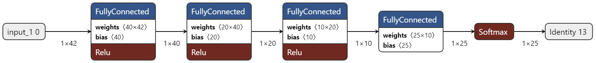
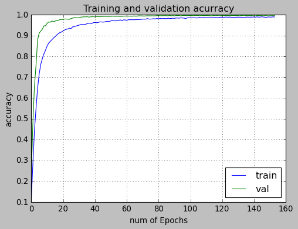

Ferramenta computacional para interação na comunicação com Libras
Este projeto foi desenvolvido durante um projeto de pesquisa. Ele foi muito desafiador em diversos aspectos. Inicialmente eu tinha apenas uma ideia de fazer um classificador de sinais de mãos, mas não sabia muito bem como. Pensei em utilizar redes neurais convolucionais, elas possuem uma arquitetura baseada na visão humana, portanto analisa pixel a pixel, porém isso haveriam diversos problemas intrínsecos a esse método. Entre eles podemos listar as variações de matanho de mão, varião no fundo da imagem e entre outros elementos que acabariam por se tornar "variáveis extras" para se preocupar, exigindo um modelo mais complexo.
Foi então que conheci o Framework desenvolvido pelo Google chamado Mediapipe e decidi utiliza-lo. Esse framework é capaz de detectar as mãos automaticamente, sem precisar de qualquer ajuste. Essa é uma solução extremamente prática, pois elimina os "ruídos" causados por variação de luminosidade, ambiente, tom de pele, tamanho da mão e entre outras variáveis que seriam um grande problema caso fossem usadas Redes Neurais Convolucionais para detecção das mãos. Além disso, outro grande obstáculo seriam as oclusões parciais, se algum sinal fosse feito com uma parte da mão fora do campo de visão da câmera, seriam gerados dados com grandes variações, o que acarretaria em sérios problemas para o classificador. Entretanto com a ferramente desenvolvida pelo Google esse problema é sanado, pois ele já possui um sistema de predição extremamente preciso que nos dá todos os pontos dá mão mesmo oclusos. Após todas essas considerações, conclui-se que o Mediapipe seria a ferramenta com maior eficiência na tarefa de detecção das mãos.
Para melhor entendimento, observe a imagem a seguir.

Normalização dos Dados
Os dados obtidos pelo framework do Google precisam ser armazenados em um arquivo .CSV para poderem ser utilizados no treinamento da rede. Entretanto antes que essa etapa seja feita, é importante que os dados sejam pré-processados. Essa etapa é muito importante, não importa o quão bom seja o modelo, se os dados forem ruins, nada funciona.
A normalização é uma técnica geralmente aplicada como parte da preparação de dados para o aprendizado de máquina. O objetivo da normalização é mudar os valores das colunas numéricas no conjunto de dados para usar uma escala comum, sem distorcer as diferenças nos intervalos de valores nem perder informações. A normalização também é necessária para alguns algoritmos para modelar os dados corretamente.
Essa etapa é de extrema importância pois os valores de obtidos (X, Y) são referentes à posição absoluta na tela, ou seja, em qual pixel aquele ponto está localizado utilizando o sistema de coordenadas cartesianas. A questão por trás desse fato, é que o mesmo sinal quando feito em locais diferentes da tela, em termo de valores absolutos, são considerados sinais completamente diferentes. Vamos usar como exemplo o sinal "A", os valores dos pontos que compõem o "A" feito no lado direito da tela são completamente diferente do mesmo "A" feito no lado esquerdo da tela. Isso acarretaria em sérios problemas para o modelo, impossibilitando que ele possa ser treinado, a menos que uma área específica da tela seja delimitada e os sinais sejam feitos apenas dentro deste pequena delimitação, porém isso deixaria o uso do software/app muito limitado e dúbio, limitando em muito o escalonamento do projeto.
Uma das técnicas mais utilizadas para o pré processamento de dados é a normalização Min-Max. Este método redimensiona o intervalo dos dados para [0,1] ou [-1, 1].
Arquitetura do Modelo
Neste projeto foi utilizada uma Rede Neural Deep Feed Foward, ela leva esse nome pois alimenta as informações em sequência linear até a saída. O modelo feed forward é a forma mais simples de rede neural, pois as informações são processadas apenas em uma direção. Embora os dados possam passar por vários nós ocultos, eles sempre se movem em uma direção e nunca para trás.
O modelo consiste em 42 layers de entrada, correspondentes ao valores de (X,Y) dos 21 sinais registrados (alfabeto completo, com exceção da letra "z" que é classificada como gesto dinâmico) e 21 layers de saída, correspondentes a cada classe (letra do alfabeto) que queremos identificar.
Para que o modelo possa funcionar corretamente serão necessárias camadas ocultas devido à natureza dos dados ser não linear. Não há uma regra que descreva qual a maneira certa de dimensionar a quantidade de camadas ocultas ou a quantidades de neurônios que cada uma deve ter, portanto foi necessário testar inúmeras configurações até chegar no resultado representado na figura abaixo.

Resultados
Como ilustrado na figura a seguir, é notório o ajuste da curva de aprendizagem em relação à curva dos dados de validação. É importante lembrar que esse ajuste é proposital e não caracteriza um problema de overfitting, os dados tem que ser bem ajustados e não necessitam de previsões probabilísticas com um conjunto de pesos e regras diferentes.

O gráfico de accuracy ajuda a entender o processo de treinamento, mas não é o mais adequados para medir a eficácia do modelo e desempenho. Nesse ponto a Confusion Matrix ganha bem mais destaque, pois ela nos permite ver as classificações corretas, bem como os falsos-positivos e os falsos-negativos.
Analisando o gráfico é possível notar que o modelo teve um ótimo desempenho, havendo poucos falsos-positivos.